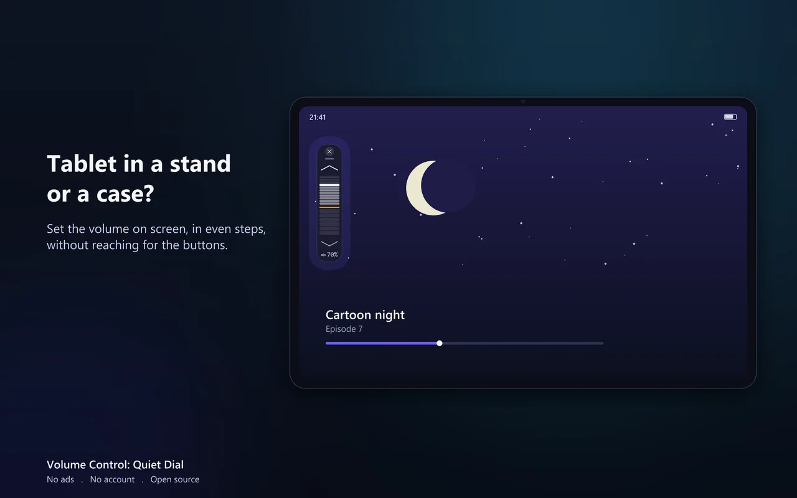

A volume button fails in a few recognisable ways, and they do not all mean the same thing. It might click normally and do nothing. It might feel mushy and half-work. It might be fine until you put the case on. It might change the volume on its own without being touched. Each of those points somewhere different, so the order below goes from the fixes that cost nothing to the one that assumes the hardware is genuinely finished.
You can change the volume on Android without the buttons in three ways. The slider in Settings, under Sound, works with nothing installed. The Accessibility Menu, also built in, adds an on-screen button with volume up and down inside it. A floating slider stays on top of whatever app you are using and sets the volume in one drag. Before any of that, restart the device and take the case off: a fair share of dead volume keys are not broken at all.
Open Settings, then Sound (on Samsung, Sounds and vibration, then Volume), and use the media volume slider there. It needs nothing installed. It is fiddly for everyday use, but it will get you sound while you work through the rest of this page.
- First: is it hardware or software?
- The free fixes, in order
- Android's built-in on-screen volume controls
- How to change the volume without the buttons, compared
- When the button is genuinely dead: a slider that replaces it
- On a tablet: a worn rocker, or buttons you cannot reach
- Buttons that work only some of the time
- Using the screen to stop a stiff button getting worse
- What an on-screen slider cannot do
- FAQ
First: is it hardware or software?
Two minutes here saves an unnecessary repair, and tells you which half of this page you actually need.
Restart the phone Fixes a real share of cases
A volume key that has stopped responding is not always a physical fault. The input layer can get into a bad state, and a restart clears it. This is worth doing before anything else precisely because it costs nothing and it works often enough to be the first step rather than an afterthought.
Take the case off and press the bare button Common and easy to miss
Cases press on volume keys more often than people expect, especially thicker ones and ones that have been on the phone a long time. A case can hold a key slightly depressed, which makes it feel dead, or make it need a much harder press than usual. If the button behaves normally without the case, you have found it.
Read what the failure feels like Tells you where to go next
If the key clicks properly but nothing happens on screen, suspect software: a remap setting, an accessibility tool, or a system glitch. If the key feels mushy, sunken, or does not click, or the volume moves without you touching it, that is a physical fault and no setting will fix it. The same goes for a volume rocker that is cracked, loose, or stuck in one position: it is broken, and the fix is either a repair or moving the volume to the screen. Sort yourself into one of those two before spending more time.
The free fixes, in order
Clean around the key Worth trying on a stiff button
Dust and pocket lint pack into the gap around a button and stop it travelling properly. Compressed air, or a soft dry brush around the edge of the key, is the safe version of this. Do not push liquid into the gap. If a button is stiff rather than dead, this is a genuine fix a fair number of times.
Check whether something has remapped the key Rare, but free to rule out
Some phones let you reassign the volume keys, for example to skip tracks with the screen off, and some camera and accessibility apps claim them too. Look through Settings for anything mentioning the volume keys or side key, and check whether a recently installed app took them over. If the key clicks but does nothing, this is worth ruling out.
Check for a system update Occasionally the actual cause
Volume key regressions do show up after system updates, and they usually get fixed in a later one. If the button stopped working right after an update rather than gradually, check whether another update is waiting.
Safe mode, to test for a misbehaving app Diagnostic, not a fix
Booting into Safe mode runs Android without third-party apps. If the volume keys work there and not normally, an installed app is interfering, and you can narrow it down by removing recent installs. If they fail in Safe mode too, the problem is the hardware or the system itself.
Android's built-in on-screen volume controls
Before installing anything, know what the phone already gives you, because for some people that is enough.
The volume slider in Settings Always there, awkward daily
Settings, then Sound (on Samsung, Sounds and vibration, then Volume), has a media volume slider, with nothing installed. Do not look for one in the pull-down panel: on stock Android that panel has a brightness slider but no volume slider. The catch is that Settings takes several taps every time, it takes you out of what you were doing, and in a full-screen video or game it interrupts you.
Accessibility Menu Built in, a few taps deep
Settings, Accessibility, Accessibility Menu adds a floating button that opens a large menu containing volume up and volume down, among other controls. It is free, it is built into Android, and it genuinely replaces the keys. It is also a menu rather than a slider: you open it, find the control, tap repeatedly, then close it again.
Both of these are real answers, and if the built-in options suit you then you do not need anything else. The gap they leave is the same one in both cases: they are somewhere you go rather than something that is simply there, and neither can take the volume below the device's own minimum.
How to change the volume without the buttons, compared
These are the three ways that work with a broken, stuck or missing volume key, side by side.
| Settings slider | Accessibility Menu | Floating slider | |
|---|---|---|---|
| Needs an install | No | No | Yes |
| Each volume change | Leave your app, open Settings, Sound, drag | Open the menu, tap volume up or down once per step, close it | One drag |
| Usable on top of a video or game | No | Yes, through its menu | Yes |
| Goes below the device's minimum | No | No | Yes, six quiet steps |
| Cost | Free | Free | Seven days free, then one payment |
If you change the volume a couple of times a day, the two built-in routes are enough and cost nothing. The floating slider earns its place when you change it often, when you are in a full-screen app, or when the lowest step is still too loud.
When the button is genuinely dead: a slider that replaces it
A floating volume slider Closest thing to having the keys back
Volume Control: Quiet Dial (the project is called Granular Volume) puts a small slider on top of whatever you are doing. Drag it up and the media volume rises, drag it down and it falls, in even 5 dB steps. While you are on a call it sets the call volume instead. It does not open a menu and it does not cover the screen, so it behaves the way the buttons behaved: always within reach, one movement, done.
Two things are worth knowing before you install it. First, the steps are built from your own device's volume curve at runtime, which is why each step is the same size as the last rather than the uneven jumps hardware keys often give you near the bottom of the range. Second, the slider does not stop where your buttons stopped: past the line marking your device's minimum it keeps going, down to 30 dB below it, for the times when the quietest the phone can manage is still too loud.
It also comes back on its own after a restart if it was running when the phone shut down, which matters more than it sounds when the slider is your only way to change the volume. And there is a mute control that silences media without touching your alarms.
It has limits, and they are listed plainly further down.
Put the volume back within reach
A floating slider that stands in for broken volume buttons, in even steps, and keeps going below your device's minimum when you need it quieter than the phone allows. No root, no computer, no ads, no tracking, no account, and no internet permission at all.
After you install, open it once and allow it to display over other apps. That is the entire setup.
On a tablet: a worn rocker, or buttons you cannot reach
Tablets bring their own versions of this problem. They are often older than the phone in the same house, handed down, and the volume rocker is one of the first parts to go. They also spend a lot of time in a stand, a keyboard cover or a thick protective case, where the keys sit on an edge you cannot reach without picking the tablet up.
Everything above works the same way on an Android tablet. The Settings slider and the Accessibility Menu are in the same places. The floating slider sits over the app you are watching or reading in, so the volume is one drag away while the tablet stays where it is. Check the case first all the same: a folio cover that presses on the rocker is a common cause on tablets, and it costs nothing to rule out.

If the tablet is also too loud at its lowest step, which happens on some models, that is the other half of what the slider does. The tablet guide covers it by brand. One exception: Amazon Fire tablets do not have Google Play, so this app is not available there.
Buttons that work only some of the time
A key that works on Monday and ignores you on Tuesday is harder to diagnose than a dead one, and it is often how a failing button behaves before it stops for good.
- It fails only in the case or cover. The case is holding the key or blocking its travel. Try a day without it.
- It started after a system update. Check for a newer update, and restart. A regression of this kind is usually fixed in a later release.
- It fails only in one app. That app is claiming the keys, as some camera, reader and game apps do. Look in that app's settings.
- It needs a harder press each month. That is wear, and it goes one way. Moving everyday volume changes to the screen takes the load off while the key still works.
None of these stops an on-screen control from working, because it does not rely on the key at all. That is the practical reason to set one up before an unreliable key becomes a dead one.
Using the screen to stop a stiff button getting worse
Not everyone reading this has a dead button. A good number have one that has started to feel wrong: harder to press than it was, or occasionally missing a press. Volume keys are among the most-used moving parts on a phone, and once one starts to go it does not come back.
Moving day-to-day volume changes to the screen does not repair anything, and it would be dishonest to suggest otherwise. What it does is reduce the number of presses a marginal key has to survive, which is worth doing while it still works. The same applies on large phones where the keys sit somewhere your thumb does not comfortably reach, and on phones used with one hand.
What an on-screen slider cannot do
Better to know these before you rely on one.
- Anything before Android starts. Recovery mode and other boot-time key combinations need the physical keys. No app runs at that point.
- Key combinations. A screenshot with power and volume down still needs the key. Android offers other ways to take a screenshot, depending on the device.
- A key that is stuck pressed. If the button is physically held down, the device keeps receiving that press and keeps pulling the volume one way. An on-screen slider does not block a hardware key, so that case needs a repair.
- Ringtone, notification and alarm levels. The slider sets media volume, and call volume during a call. The other levels stay where they are, in Settings under Sound.
- The lock screen and the screen-off state. A floating control is on screen only while the screen is on and unlocked.
If one of these is the thing you need, a repair is the right answer and this page should not talk you out of it.
FAQ
- How do I change the volume on Android without the buttons?
- Use the media volume slider in Settings, under Sound, turn on Settings, Accessibility, Accessibility Menu for an on-screen button with volume controls inside, or install a floating slider that stays available on top of whatever you are using.
- Is my volume button broken, or is it software?
- Restart first, then take the case off and press the bare key. A key that clicks normally but does nothing points at software or a remap. A key that feels mushy, does not click, or moves the volume on its own is a hardware fault.
- Can an app really replace the volume buttons?
- Yes, for everything inside Android. An app can set the volume of the active audio stream, which is what the buttons do. The exception is the key combinations that run before Android starts, such as recovery mode.
- Does Android have a built-in on-screen volume control?
- Yes, two: the media volume slider in Settings, and the Accessibility Menu. Both are free and built in. Both take a few taps each time and neither can go below the device's minimum.
- Will an on-screen slider stop my volume buttons wearing out?
- It reduces how often you press them, which is the main cause of wear on a key that is already stiffening. It cannot repair a key that has already failed.
- Does this work on an Android tablet?
- Yes. The Settings slider, the Accessibility Menu and a floating slider all work the same way on Android tablets, including with the tablet in a stand or a case. Amazon Fire tablets are the exception for the app, because they do not have Google Play.
- What can an on-screen volume slider not do?
- It cannot help before Android starts (recovery mode), with key combinations such as the screenshot shortcut, or with a key that is physically stuck pressed. It sets media volume, and call volume during a call. Ringtone, notification and alarm levels stay in Settings.
- Does it need root, ADB, or a computer?
- No. It uses Android's own audio APIs and needs a display-over-other-apps permission plus standard audio permissions.
- Does it survive a restart?
- Yes. If it was running when the device shut down it comes back by itself. If you stopped it deliberately it stays stopped.
- Is it free and private?
- Free to install, and the first seven days after you install are the complete app with nothing held back. After that, keeping the control takes one payment, once. Nothing renews and there is no subscription to cancel. No ads, no account, and no internet permission at all, so it cannot send data anywhere. Open source under GPL-3.0, and the F-Droid build has every step at no charge.